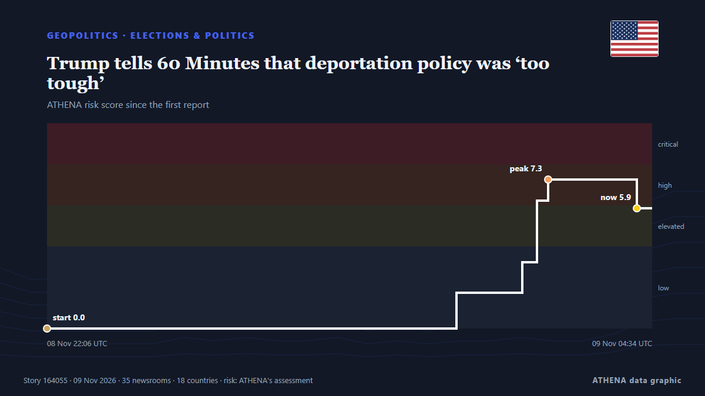

ATHENA Glaux Intelligence — Global news intelligence — every number explained
Every headline, checked across countries.
ATHENA Glaux reads 632 news outlets worldwide. A story becomes a verified event only when independent outlets report it. Each event shows who was first and a risk score with its reasons.
Reports drift in from independent outlets - when two meet on the same story, it becomes a verified event.
Three ways to read today
Start with the one that fits your timeVerified events
Ranked by how widely they are reported
- After JD Vance, now Trump Jr blames Iran war for US midterms defeat83 outlets · 39 countriesRisk 7.1
- Trump says 'great dislike' for Israel contributed to Republican rout in midterms80 outlets · 36 countriesRisk 6.9
- Poland calls Krakow shooting rampage 'terrorist' attack56 outlets · 35 countriesRisk 7.5
- Explosions heard on Iran's Qeshm Island, state media reports67 outlets · 34 countriesRisk 6.1
- Republican launches impeachment against US defense chief Pete Hegseth70 outlets · 33 countriesRisk 8.0
Analysis Desk
Ask a question and read a reasoned assessment of a leading story, with what would prove it wrong.
Open the Analysis Desk ›How ATHENA checks a story
- CollectReports arrive from independent outlets in many countries.
- MatchWhen two outlets meet on the same story, it becomes a verified event.
- ExplainEach event shows who was first, how far it spread and why the risk is what it is.

GeopoliticsTrump tells 60 Minutes that deportation policy was ‘too tough’
Reported by 35 outlets in 18 countries since 6 Nov. First reported by Small Wars Journal. ATHENA rates the risk 5.7/10 (elevated), with 88% confidence.
Paraguay’s former president charged after bank collapse
The accounting black hole at Ueno Bank swallows public funds, leaves thousands of citizens without access to their deposits and pushes Paraguay into its worst institutional crisis in years. from Euronews English
Explosions heard on Iran's Qeshm Island, state media reports
TEHRAN, Nov 3: Several explosions were heard from the direction of the sea near Iran's southern port city of Bandar Lengeh on Monday, according to the IRGC-affiliated Fars news age... from Arab Times

After JD Vance, now Trump Jr blames Iran war for US midterms defeat
Says war in Iran had weighed on Republican candidates, even as voters backed his handling of it. from Express Tribune
Republican launches impeachment against US defense chief Pete Hegseth
The 15 Minute City model calls for walkable, bike-able access to basic services and resources, a concept that has been embraced by none other than the US Department of Defense. from CleanTechnica
Riyadh financial district targeted, Aramco skyscraper damaged
An Aramco building in Riyadh was targeted in an "attempted attack", the Saudi energy ministry said on Sunday, with eyewitnesses telling AFP the skyscraper sustained damage, after the Saudi-led… from Al-Monitor
Geopolitics, Politics & Security
More ›Trump questions midterm elections integrity after previously accepting results
A Democratic victory in Congress could reshape Washington’s approach to Africa, putting Trump’s deportation deals, visa restrictions and minerals partnerships under fresh scrutiny. from The Africa Report
- Diplomacy & summits
Europeans to join Ukraine peace talks in Abu Dhabi: Berlin
- Wars & conflicts
Production Suspended at Iraq’s Khor Mor Gas Field After Drone Attack
- Alliances & treaties
Syria arrives at the Mecca pact with an occupation and a war next door
- Elections & politics
Merz nominates Ilse Aigner as Germany's president
Economics, Finance & Markets
More ›Pope Leo Mass in Buenos Aires draws record crowd of 2.5 million, Vatican says
Vast crowds thronged one of the main boulevards in Buenos Aires on Monday as Pope Leo rejoiced at the strength of the Catholic Church in South America during an outdoor Mass that officials said drew… from The Korea Times
- Crypto & digital assets
Binance’s CFO Leaves Company in Wake of $6 Billion Crypto Heist
- Debt & budgets
Pope urges Argentina's Milei to put people before economy
- Jobs & wages
France accelerates minimum wage hike in bid to quell protest
- Jobs & wages
Civil servant who secretly held five jobs found guilty of fraud
Trade, Industry & Infrastructure
More ›Turkey steel factory blast kills at least 17 people
Eyewitnesses say the explosion shook the ground, with one believing an earthquake had hit near the Habas Demir Celik plant in Aliaga. from BBC News
- Aviation, rail & road
Top Vietnamese leader attends ceremony marking 10 years of Vietnam Airlines-ANA Holdings strategic cooperation
- Tariffs & export controls
China extends suspension of 24 pct additional tariff on U.S. goods for two months
- Trade & trade deals
German exports rise more than expected in September
- Shipping & ports
Iran says 2-day proposal to US offers roadmap for restoring security in Strait of Hormuz
Energy, Resources & Environment
More ›Dense fog expected overnight as yellow warning issued
The warning area stretches from Luton to Manchester and includes parts of central and northern England and Wales. from Evening Standard (London)
- Pollution & biodiversity
Thick smog shrouds New Delhi after Diwali firecrackers add to seasonal pollution
- Climate & climate policy
COP31 opens with leaders under pressure to tackle climate crisis
- Oil & gas
Saudi Arabia says East-West oil pipeline targeted in Medina, operations unaffected
- Nuclear energy
IAEA condemns deadly drone strikes near Ukraine nuclear plant
Technology, AI & Cybersecurity
More ›French officials blame Iran for refrigerator hacks, vow retaliation
By Raphael Satter and Gabriel Stargardter PARIS, Nov 9 (Reuters) - French officials on Monday accused Iran's Revolutionary Guards of responsibility for the cyberattacks that knocked outcommercial… from Al-Monitor
Business, Companies & Investment
More ›Honda will spend $3B on a new Ohio car plant built around hybrids
Honda will invest $3B in a new Ohio assembly plant, its first new US vehicle plant since 2008, opening in 2029 with capacity for 240,000 mostly hybrid vehicles a year. from The Next Web
- Corporate strategy
Jensen Huang Falls Two Spots In Billionaire Rankings As Nvidia Investigates His Affair With Alleged Chinese Spy
- Bankruptcies & restructuring
Majority accuses Akufo-Addo administration of creating the conditions for passport racketeering.
- Corporate strategy
Nvidia in turmoil as China denies spying claims
- Corporate strategy
Iran’s 26th International Electricity Exhibition showcases latest industry achievements
Today in numbers
| 21:00 | 249 |
|---|---|
| 22:00 | 264 |
| 23:00 | 282 |
| 00:00 | 366 |
| 01:00 | 297 |
| 02:00 | 319 |
| 03:00 | 319 |
| 04:00 | 396 |
| 05:00 | 532 |
| 06:00 | 608 |
| 07:00 | 565 |
| 08:00 | 0 |
| 09:00 | 400 |
| 10:00 | 533 |
| 11:00 | 1380 |
| 12:00 | 962 |
| 13:00 | 655 |
| 14:00 | 741 |
| 15:00 | 780 |
| 16:00 | 1232 |
| 17:00 | 650 |
| 18:00 | 406 |
| 19:00 | 366 |
| 20:00 | 450 |
Risk of today's events
Most widely covered
- Economy & Markets
Binance’s CFO Leaves Company in Wake of $6 Billion Crypto Heist
53 countries · 129 outlets - Geopolitics
After JD Vance, now Trump Jr blames Iran war for US midterms defeat
39 countries · 83 outlets - Geopolitics
Trump says 'great dislike' for Israel contributed to Republican rout in midterms
36 countries · 80 outlets
Emerging signals
- Sudden surge · Active nowJensen Huang
- Sudden surge · Active nowNvidia
- Sudden surge · Active nowMinutes
- Sudden surge · Active nowCrete
- Sudden surge · Active nowIntelligence and espionage
Official warnings
- M 6.1 - Fiji regionM6.1 · USGS ·
- Cyber chief: UK facing AI-powered attacks on critical infrastructure within two yearsadvisory · UK National Cyber Security Centre ·
Get ATHENA on Telegram
Join the free ATHENA Glaux group and receive the news the moment it is published here:
- breaking events with a risk of 6 or more
- an hourly round-up of the top events
- risk-tracker updates (Hormuz, Red Sea, Taiwan, sanctions and more)
- the daily briefing every morning at 10:00 (Athens time)
- a weekly outlook
- official warnings, emerging signals and rising risks
Tap the button, Telegram opens, press Join. Posts are in English; you can mute or leave at any time. No Telegram yet? It is free at telegram.org.
Risk trackers
More ›Global risk outlook — week 46, 2026 (9–15 Nov) ›